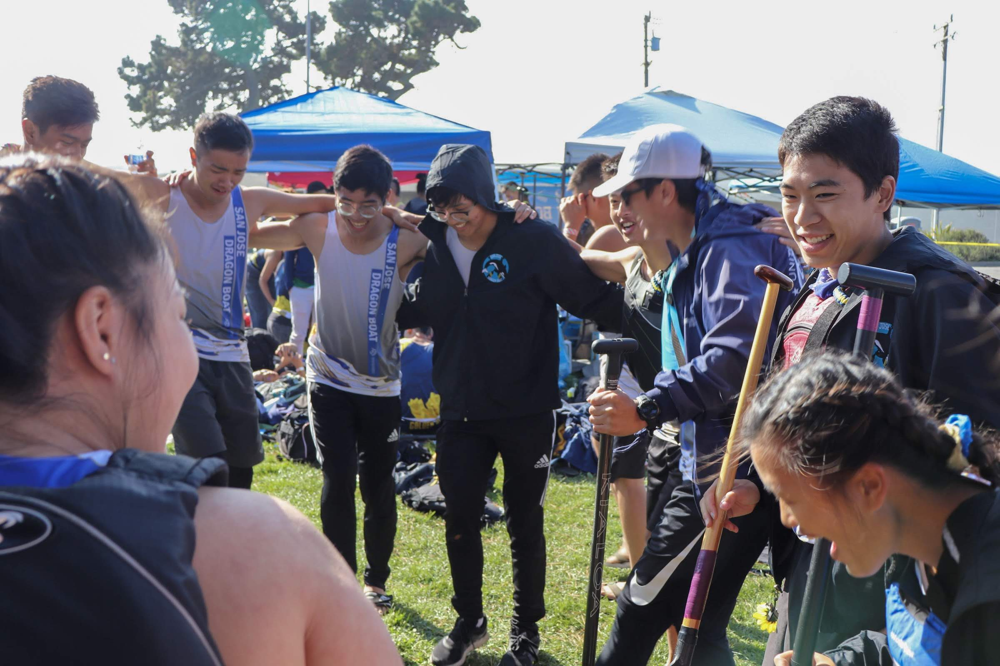

About us
Who we are
SJDB IS...
a small gathering of passionate students aiming to grow our program to new heights. Established in 2015, our predecessors enviosioned a comeptitive team that would allow students of the San Jose community to paddle, train, and great memories together. Our inclusive team consisting of designers, engineers, and educatiorss collective strive to improve one another and our. Our team is very welcoming and social, and we pride ourselves in allowing anyone interested in coming out to Dragonboating!

Some of our paddlers
Hajime Hinata

Hajime Hinata is a 4th year accounting student who has been an integral part of our team for 2 seasons now. Hajime has been itching to race again since several races have been cancelled due to the pandemic. Hajime also loves baking, our team cant get enough of his warm chocolate chip cookies!
What made you join Dragon boat?
I wanted to push myself to try something new and get out of my comfort zone. I ended up not only finding a sport I love, but an incredible family and network as well!
How did you get so good at baking?
I spent an unhealthy amount of time this past year watching baking videos. Glad I managed to learn something useful over the pandemic!
Andrew Luong

I'm a third year Computer Science student at SJSU. I paddled for two years in high school and have joined SJDB in Fall 2021. The two year gap in between gave me reminiscent of what I loved about Dragon Boat, the community and feeling active in a sport.
What Made You Join & Continue Dragon Boat?
I was recommended by friends to join Dragon Boat in high school and college, and I always gave things a try. The fact that it is a team sport allows for a lot of socials. The experience is very unique. which is why I have continued paddling, especially for SJDB.
How Did Learn How To Do Flips?
I used to be a hurdler and sprinter in Track & Field, which helped with my speed and jumps. But ultimately, I used my mattress, self-learning recources, and a surpluss of passion to do something unique and cool.
Annie Dinh

Hello! I’m Annie, a former Co-Captain, and I’ve been paddling for SJDB since my freshman. I’ve been incredibly fortunate to be able to meet so many different people from my experiences with SJDB over the years that I can still call my friends to this day. SJDB has encouraged me to step out of my comfort zone and pushes me to be active and adopt healthier habits even in my day-to-day life.
What Made You Join SJDB
I used to paddle in highschool as well. I had initially joined because my then-partner encouraged me to try it out—and I remember thinking: “What the heck is a dragon boat??” Needless to say, from the first practice out and being able to feel the contagious competitive drive from other members, I was hooked; (I have also since indeed learned what a “dragon boat” is.) As a result, continuing my dragon boat stint by choosing to join SJDB when I began college was a no-brainer!
What is your favorite memory from Dragon Boat?
My favorite memory of DB is my very first race back in 2015. It was windy, pouring rain, and everything was muddy and honestly pretty miserable. Even though I ended up getting sick and somehow STILL managed to get sunburnt, I had so much fun. All of the hard work and dedication my team put into our practices truly showed during the race pieces, and proved that our efforts could amount to so much. Laughing, crying, and hurting together with your teammates is a pure and intimate feeling you can only know once you’ve experienced it. Aside from the friendships I've made from DB, the adrenaline rush I get from races are what motivate me to continue paddling.
Iris Zhu
Iris is a recent graduate from San Jose State University who graduated with a Bachelor’s Degree in Business Administration with a concentration in Marketing. She first started dragon boat in her freshman year of high school and has been paddling consistently until her senior year of college. Though Iris has not been as active as she would like, she is fond of the memories she made with SJDB and continues to support SJDB with her whole heart. Besides dragon boat, Iris enjoys her free time with friends by going to concerts and trying new foods!
What made you stick around with SJDB for so long?
Besides my love for paddling and competition, it was the people that made me stay. It sounds cheesy and cliche but it is true; I have made wonderful friendships that I hold dear to my heart with the people I met here. I have seen many people come and go in this team but I hope those people know how much they affected my life with their words and kindness. Truly, SJDB is my second family and I know I can rely on them to motivate me and push me forward in life.
Who would you recommend SJDB to?
I would definitely recommend SJDB to anybody who has an open mind and looking to grow mentally and physically stronger. Dragon boat can seem intimidating since it isn’t a traditional American sport and it can seem like a challenge but I think that’s what I liked about it; I wanted to improve and grow to be better at the sport. You definitely do not need prior experience or knowledge to join and you don’t even need to know how to swim! Our team is also full of fun and goofy people so who knows, you’ll meet one of your best friends here too!
And many more! Check out the rest of our amazing paddlers here!